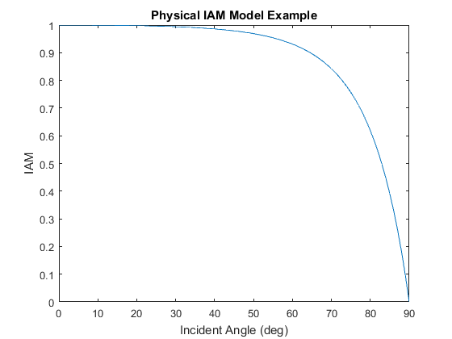

pvl_physicaliam
Determine the incidence angle modifier using the "physical" model.
Contents
Syntax
- IAM = pvl_physicaliam(K, L, n, theta)
Description
pvl_physicaliam calculates the incidence angle modifier using the physical model [1] which is based upon Snell's Law for transmission of light and and Bougher's Law for absorbtion within a cover. Required information includes incident angle, cover extinction coefficient, cover thickness
Note: Eqn. 14 in [1] is incorrect. The correct equation (implemented in this function) is:
 .
.
Inputs
- K - The glazing extinction coefficient in units of 1/meters. Reference [1] indicates that a value of 4 is reasonable for "water white" glass. K must be a numeric scalar or vector with all values >=0. If K is a vector, it must be the same size as all other input vectors.
- L - The glazing thickness in units of meters. Reference [1] indicates that 0.002 meters (2 mm) is reasonable for most glass-covered PV panels. L must be a numeric scalar or vector with all values >=0. If L is a vector, it must be the same size as all other input vectors.
- n - The index of refraction (unitless). Reference [1] indicates that a value of 1.526 is acceptable for glass. n must be a numeric scalar or vector with all values >=0. If n is a vector, it must be the same size as all other input vectors.
- theta - The angle of incidence between the module normal vector and the sun-beam vector in degrees. theta must be a numeric scalar or vector. For any values of theta where abs(theta)>90, IAM is set to 0. For any values of theta where -90 < theta < 0, theta is set to abs(theta) and evaluated.
Output
- IAM - The incident angle modifier as specified in eqns. 14-16 of [1]. IAM is a column vector with the same number of elements as the largest input vector.
Example
This example plots the IAM for glass over a range of incident angles.
K=4; %glazing extinction coefficient in units of 1/meters L=0.02; %glazing thickness in units of meters n= 1.56; %index of refraction theta = 0:90; %incident angle in degrees IAM = pvl_physicaliam(K, L, n, theta); figure plot(theta,IAM) xlabel('Incident Angle (deg)') ylabel('IAM') title('Physical IAM Model Example')
References
[1] De Soto, W., Klein, S. A., Beckman, W. A., 2006. Improvement and validation of a model for photovoltaic array performance, Solar Energy, vol 80, pp. 78-88.
[2] Duffie, John A. & Beckman, William A., 2006. Solar Engineering of Thermal Processes, third edition. Available from http://common.books24x7.com/toc.aspx?bookid=17160.
See also
pvl_getaoi , pvl_ephemeris , pvl_spa , pvl_ashraeiam , pvl_martinruiziam
Copyright 2014 Sandia National Laboratories